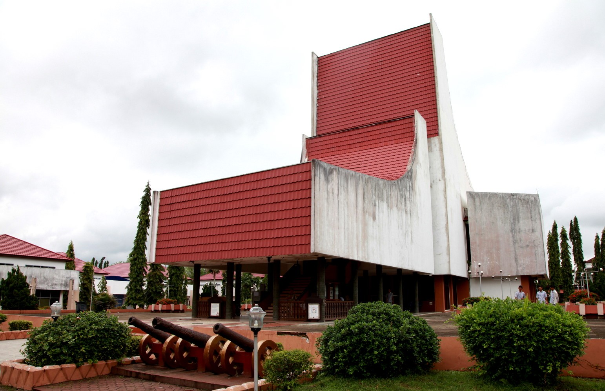
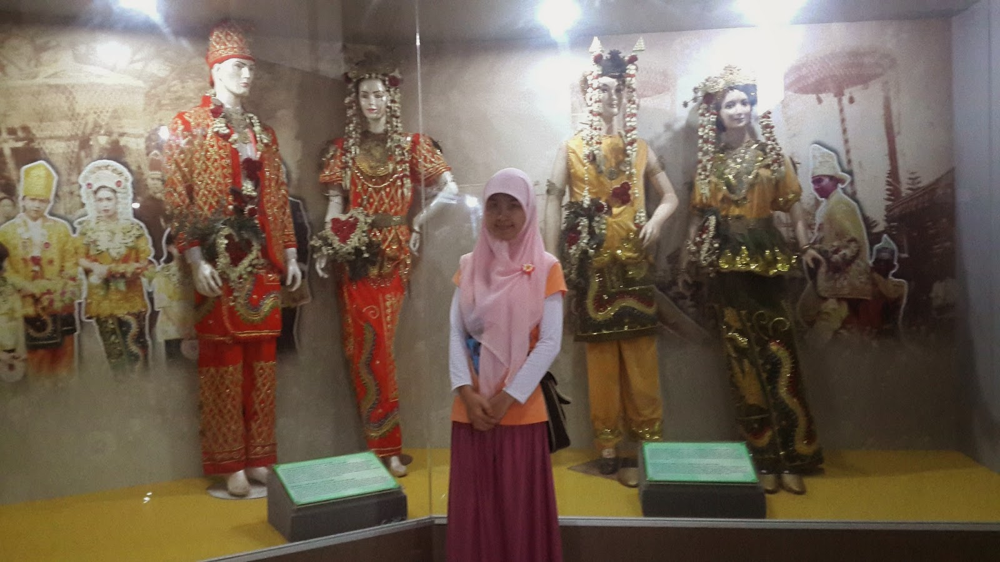

Museum Lambung Mangkurat
ditulis oleh Warisan Budayapada 1 April 2024
Museum Lambung Mangkurat merupakan sebuah museum yang terletak di Kota Banjarmasin, Kalimantan Selatan, Indonesia. Museum ini dinamai sesuai dengan nama sebuah kapal perang kerajaan Banjar yang disebut Lambung Mangkurat :
Lokasi dan Aksesibilitas: Museum Lambung Mangkurat terletak di Jl. Brigjen Hasan Basri No. 28, Banjarmasin, Kalimantan Selatan. Lokasinya cukup mudah diakses dengan berbagai moda transportasi.
Sejarah: Museum Lambung Mangkurat didirikan pada tahun 1980 oleh Pemerintah Kota Banjarmasin. Museum ini awalnya didirikan sebagai tempat penyimpanan artefak dan benda-benda bersejarah yang berkaitan dengan sejarah dan budaya lokal, terutama terkait dengan sejarah Kerajaan Banjar.
Koleksi: Museum ini memiliki beragam koleksi yang mencakup berbagai aspek kehidupan dan sejarah Kalimantan Selatan, termasuk artefak sejarah, replika Lambung Mangkurat, perlengkapan tradisional, senjata tradisional, serta berbagai benda-benda bersejarah lainnya yang berkaitan dengan budaya dan kehidupan sehari-hari masyarakat Banjar.
Bangunan dan Eksterior: Bangunan museum ini mungkin menggabungkan elemen arsitektur tradisional dan modern, menciptakan suasana yang menarik bagi pengunjung. Eksteriornya mungkin menampilkan patung-patung dan artefak-arteafak kecil yang menarik perhatian pengunjung.
Fasilitas: Museum ini biasanya dilengkapi dengan fasilitas seperti ruang pameran, area informasi, dan area istirahat. Pengunjung juga dapat diarahkan oleh petugas atau pemandu yang tersedia di museum untuk memberikan informasi lebih lanjut tentang koleksi dan sejarah museum.
Program dan Acara: Museum Lambung Mangkurat mungkin menyelenggarakan berbagai program pendidikan, tur, serta acara budaya dan seni yang bertujuan untuk memperkenalkan dan melestarikan warisan budaya dan sejarah Kalimantan Selatan kepada masyarakat.